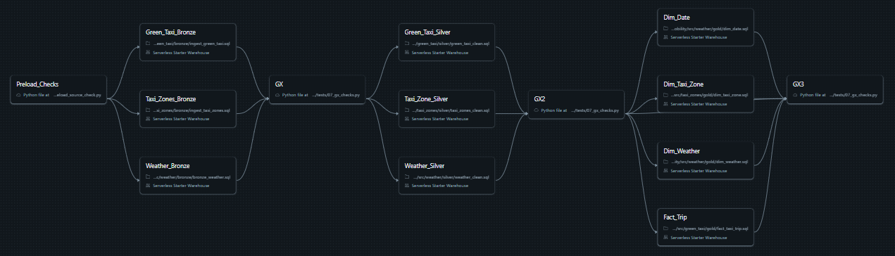

Bronze · land
Load source records with audit context and minimal transformations, keeping the original inputs available as a traceable starting point.
Integrating trips, weather, geography, and traffic context into a trusted, analytics-ready mobility dataset.
This Databricks project brings together NYC Green Taxi trips, historical weather, taxi zone reference data, and traffic advisories. Its Medallion pipeline is designed for repeatable incremental processing, explicit quality validation, and dependable downstream analysis.

Source-specific ingestion handles the format each provider publishes, then the pipeline brings the domains into a consistent model for analysis.
Load source records with audit context and minimal transformations, keeping the original inputs available as a traceable starting point.
Clean fields, standardize formats, deduplicate records, and apply quality rules before data moves into curated models.
Publish fact and dimension tables that align trips with date, taxi-zone, and weather context for trusted analytics.